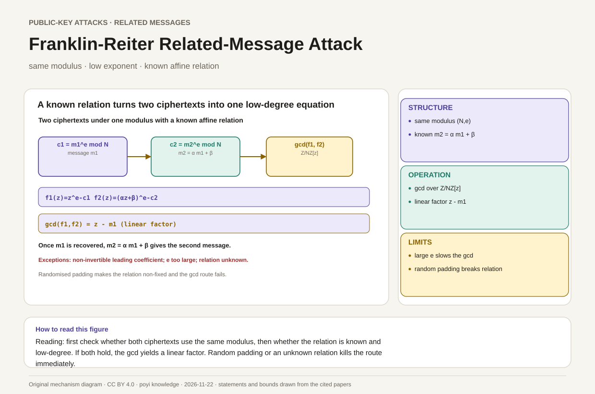
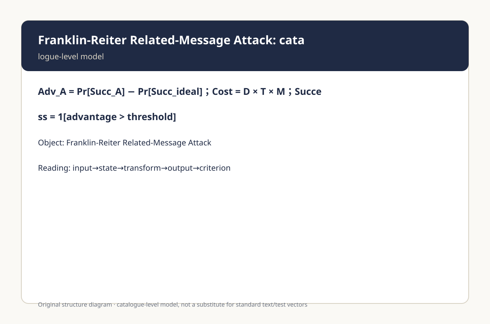

Principles
Attack: Franklin-Reiter Related-Message Attack (Franklin-Reiter 相关消息攻击). ### One modulus, low exponent, known relation
Suppose two messages m1 and m2 are encrypted under the same RSA public key (N,e), and the attacker knows the affine relation m2 = α m1 + β. Let c1 = m1^e mod N and c2 = m2^e mod N. Construct two univariate polynomials
f2(z) = (α z + β)^e - c2. Both have z = m1 as a root modulo N. The goal is not to factor N, but to separate this common root from the two high-degree polynomials. ### Polynomial gcd removes the high-degree terms
Compute g(z) = gcd(f1, f2) over the ring Z/NZ[z]. If the leading coefficients are invertible and the case is not one of the exceptions listed in the paper, g is the linear polynomial z - m1. Its root recovers m1, and the affine relation gives m2. Intuitively, the gcd isolates the common root of two degree-e polynomials without knowledge of the factors of N. ### Complexity and the usable exponent range
Plain Euclid costs about O(e^2) ring operations; fast polynomial gcd algorithms reach O(e log^2 e). The attack is therefore almost immediate for e=3 and still far cheaper than a 2^16 brute force for e=65537. The paper notes that, with a good implementation, exponents up to roughly 32 bits may remain practical. The cost grows with e, not with the size of the factors of N.

Why it matters
e=3 or e=65537 is often chosen to reduce encryption and verification cost. The low exponent itself is not the problem; it turns a relation between messages into a solvable low-degree equation. If a protocol preserves a known affine relation, for example a counter, timestamp, sequence number or shared padding, the attacker can cancel the unknown high-degree terms using the ciphertexts.
Franklin-Reiter requires one modulus N; Hastad's broadcast attack uses distinct moduli and CRT. Both exploit a low exponent, but the mathematical entry points differ: a polynomial gcd over one ring versus CRT plus an integer e-th root across moduli. Calling both simply “low-exponent attacks” hides the difference in defences.
Deterministic padding is not automatically safe when the message relation is predictable. Randomised padding, hashing the message into a randomised encoding, or a scheme that destroys the algebraic relation makes the “known polynomial relation” premise false. The audit questions are: does the attacker know the exact algebraic relation between the m_i, is the modulus the same, and is e small enough for a polynomial gcd?
Applications
- Collect several ciphertexts under one public key and confirm that they share both modulus and exponent. 2. Identify a known relation between the messages: affine, same-degree polynomial, or a linear constraint imposed by the protocol. 3. Build f_i(z) = (p_i(z))^e - c_i and compute the polynomial gcd; a linear factor recovers the message. 4. If the gcd has higher degree, use resultants, algebraic elimination or a Coppersmith-style lattice method. 5. Record e, the relation degree δ and the number of messages k; these parameters decide whether the attack is polynomial time.
When auditing RSA protocols, look for the combination “same key + low exponent + predictable relation”; check whether padding is randomised; check whether the message is used directly as a polynomial variable instead of being passed through a randomised encoding. Raising e is not always feasible, but it is one repair explicitly discussed in the paper when the relation cannot be removed.

Limits & attacks
- Different moduli. The Franklin-Reiter gcd runs over one Z/NZ; distinct moduli move the problem into the Hastad/CRT route. 2. Unknown or uncertain relation. If the relation contains an unknown random quantity, the attacker cannot write f2. 3. Non-invertible leading coefficient or an exceptional case. The paper lists rare cases where the gcd may not be linear; an implementation must check them. 4. e too large. The polynomials have degree e and the gcd cost grows with e; for very large e the attack is no longer practical. 5. Effective randomised padding. If padding makes the relation between m1 and m2 non-fixed, the algebraic premise is broken. The paper also warns that not every padding is sufficient; it must be randomised and analysed. 6. Homogeneous relations. The paper notes that in the homogeneous case one may recover only homogeneous polynomials, not the individual message.
History
Franklin and Reiter first gave the k=2, e=3, δ=1 affine case. In 1996, Coppersmith, Franklin, Patarin and Reiter generalised it at EUROCRYPT: e can be arbitrary, the relation degree δ can exceed 1, and the number of messages k can grow. The paper explicitly separates this route from the attacks of Moore, Hastad and Simons: those target different public keys, while this one targets one public key.
The paper turned “known algebraic relation” into an independent entry point in RSA cryptanalysis. Later Coppersmith small-root methods and lattice reductions extended the same idea to more general modular equations; in modern RSA attack literature, Franklin-Reiter is the standard starting point for “same modulus, low exponent, related messages”.
Worked example & verification
Formal model and reproduction steps
[\mathrm{Adv}^{\mathrm{attack}}_A(\lambda)=\Pr[\mathrm{Game}_A(\lambda)=1]-\frac12]
Franklin-Reiter Related-Message Attack: the registered public parameters, key material or randomness, and message are mapped through the stated transformation to an output checked against the registered criterion. The worked example is a structural reproduction, not a new test vector; parameter ranges, standard versions and implementation details remain source-bound.
References
- Wikipedia search entry for Franklin-Reiter 相关消息攻击. https://zh.wikipedia.org/w/index.php?search=Franklin-Reiter%20%E7%9B%B8%E5%85%B3%E6%B6%88%E6%81%AF%E6%94%BB%E5%87%BB
- Handbook of Applied Cryptography (Menezes, van Oorschot, Vanstone). https://www.cacr.math.uwaterloo.ca/hac/